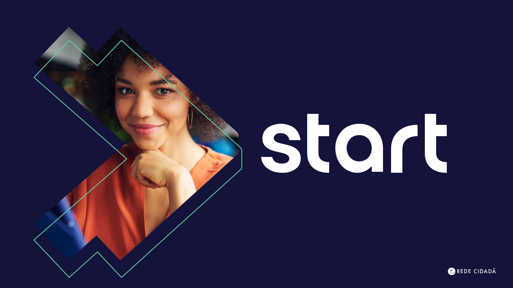

Esse é um projeto que tem por objetivo ensinar ferramentas de T.I para jovens. Promovendo maior empregabilidade e fomentando o empoderamento deles no mercado de trabalho
Jovens entre 18 e 29 anos que tem interesse na área de tecnologia, e que não estejam trabalhando ou estudando no momento.